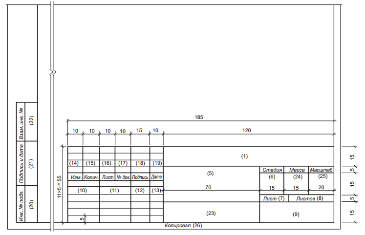

СОЗДАНИЕ ПРОЕКТНОЙ ДОКУМЕНТАЦИИ ОБ ИССЛЕДУЕМОМ ПОМЕЩЕНИИ
Цели работы:
1. Изучить правила оформления проектной документации;
2. Создать проектную документацию для исследуемого помещения
Теоретические сведения:
При оформлении проектной документации систем безопасности следует использовать ряд соответствующих руководящих документов и стандартов. Например, при заполнении штампов чертежей следует использовать стандарт СТБ 2255-2012 (рисунок 1).

Рисунок 1 – Форма основной надписи, дополнительных граф к ней для первого листа изделий
На рисунке 1 в графах основной надписи указывают:
1. в графе 1 – обозначение документа;
2. в графе 2 – наименование предприятия, в состав которого входит здание;
3. в графе 3 – наименование здания;
4. в графе 4 – наименование изображений, помещенных на листе, в точном соответствии с наименованием изображений на чертеже;
5. в графе 5 – наименование изделия и/или наименование документа;
6. в графе 6 – условное обозначение стадии проектирования;
7. в графе 7 – порядковый номер листа;
8. в графе 8 – общее число листов документов;
9. в графе 9 – наименование или различительный индекс организации, разработавшей документ;
10. в графе 10 – характер работы;
11. в графе 11-13 – фамилии и подписи лиц, указанных в графе 10;
12. в графе 14-19 – номер граф таблицы изменений;
13. в графе 20 – инвентарный номер подлинника;
14. в графе 21 – подпись лица, принявшего подлинник на хранение, и дату приемки;
15. в графе 22 – инвентарный номер подлинника документа, взамен которого выпущен подлинник;
16. в графе 23 – обозначение материала детали;
17. в графе 24 – массу изделия, изображенного на чертеже.
При оформлении последующих чертежей используют надпись как на рисунке 2.
Рисунок 2 – Пример основной надписи оформления последующих листов
На рисунке 3 приведен пример оформления спецификаций:
Рисунок 3 – Правила оформления спецификации
В графе «Поз.» указывают позицию элементов конструкций, установок. В графе «Обозначение» приводят обозначение основных документов на записы-ваемые в спецификацию элементы конструкций, оборудования. В графе «Наименование» записывают наименование элементов конструкции, оборудо-вания. В графе «Кол.» указывается количество элементов. В графе «Масса ед., кг» указывают массу в килограммах. В графе «Примечание» приводят допол-нительные сведения.
Практическая часть:
Создать проектный документ-отчет по проделанной работе, в который входит:
1. Пояснительная записка
2. Графический материал:
а) Структурные схемы электронных систем безопасности;
б) План расположения оборудования и каналов связи с экспликацией помещения;
в) Спецификация оборудования
Контрольные вопросы:
1. Какими документами руководствуются при оформлении технической документации?
2. Перечислите документы, которые необходимы при проектировании систем безопасности.
3. Какие типы форматов могут использоваться при оформлении доку-ментации.